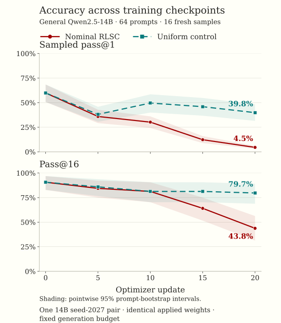

The confidence that never reached the optimizer
What a Qwen self-training study taught me about confidence, useful exploration, and Prime RL.
One of my first runs looked encouraging. After ten updates, Qwen2.5-Math-7B moved from 58.6% to 69.8% on MATH-500. The model had trained on its own generated solutions, under a rule intended to give more weight to solutions it considered likely.
That is an attractive result. No correctness labels in the training loop. No separate reward model. The intended idea was simple: give the model a question, let it make several attempts, and reinforce the attempts it considered likely more strongly.
But the more useful result came from asking a less exciting question: did confidence actually change the weights that reached the optimizer?
In a later, closely audited 14B training pair, the answer was no. All 320 responses in the nominal confidence arm received exactly the same scalar weight as the uniform control. There were different checkpoints and different evaluation curves, but no active confidence-weighting contrast in that pair.
This post is about what I learned by following that discrepancy. There is a real answer-selection signal in model probabilities. There are unstable training results, and there is a measurable loss of useful sampled coverage. Keeping those observations separate turned out to be the central research task.
What I asked the model to learn
The question was whether a language model could improve by fitting its own solutions, with more weight on solutions it considered likely. I used Qwen2.5-Math at 1.5B and 7B, then general Qwen2.5 at 7B and 14B. This Qwen study had no SFT stage.
At each update, I selected one unlabeled question from a pool of 30 AIME 2024 problems. The current model generated 16 solutions at temperature 0.5. The trainer scored those exact response tokens, applied one update, and refreshed the inference weights before the next question.
Confidence here is a quantity computed from token probabilities. I did not ask the model to write a confidence percentage. I also did not discard answers below a threshold: every valid response contributed.
In the equations below, \(\pi_\theta\) denotes the temperature-0.5 policy. For response \(i\), I summed the response-token log probabilities:
Exponentiating that sum gives the product of the conditional token probabilities:
That is the probability of the generated token sequence. It is not the probability that the mathematical answer is correct. A predictable mistake can have high probability, and a long correct derivation can have very low sequence probability.
I compared the untouched model with two independently trained copies. The nominal RLSC arm used \(w_i=\operatorname{stopgrad}(c_i)+0.1\). The uniform self-training control used \(w_i=0.1\). Both minimized:
I sum within a response and average across the 16 responses globally. Prompt and padding tokens are masked. The confidence is detached, so gradients flow through the final log probability rather than through the weight. This gives a REINFORCE-style score-function update.
The word nominal will matter throughout this post. It identifies the configured RLSC arm without assuming that confidence produced a meaningful numerical change in its weights.
A few implementation details that change the experiment
The pinned Prime trainer scales logits by the rollout temperature before computing log probabilities, so the objective uses the temperature-0.5 policy. I recompute confidence in the current trainer forward pass. Saved inference probabilities are diagnostic information.
I require a complete group from one policy version. Empty, failed, incomplete, or mixed-policy groups are rejected. Responses that reach the generation cap are retained and flagged. Their score describes the generated prefix, which may not contain a complete solution. Outside an initial smoke test, the cap is 3,072 generated tokens in a 4,096-token context.
The main learning rate is 1e-5, with later tests at 1e-6. Runs use AdamW with weight decay 0.01 and last 10 or 20 updates. Each 20-update run starts again from base. Optimization uses FP32 with CPU optimizer-state offload, while vLLM inference uses BF16.
There is a subtlety in the constant-weight control. Under exact on-policy sampling over a normalized trajectory distribution, \(\mathbb E_{y\sim\pi_\theta}[\nabla_\theta\log\pi_\theta(y\mid x)]=0\). A constant reward therefore has zero expected score-function gradient. A finite group of 16 samples need not have zero gradient, and AdamW, weight decay, and departures from the ideal sampling assumptions can still move the model. Calling this arm uniform self-training describes the implemented finite-sample update.
The confidence term can disappear twice
The sum of log probabilities was implemented as intended. The problem came after the sum.
Imagine an answer with 200 tokens, each assigned probability 0.9. This is a deliberately simple example, not a measured response. Its sequence probability is \(0.9^{200}\), approximately \(7.06\times10^{-10}\). That is a very small addition to 0.1.
Two different numerical effects matter. First, exponentiation can underflow and produce zero. Second, confidence can remain nonzero but still be too small to change the stored FP32 value when added to 0.1. Avoiding underflow alone does not fix the second problem.
Try the scale of a sequence probability
Assume every token has the same probability. Change the length or token probability and watch the weight. This illustrates FP32 rounding rather than replaying a GPU kernel.
- Sum of log probabilities
- −21.072
- Sequence probability (FP64)
- 7.0551e-10
- Confidence rounded to FP32
- 7.0551e-10
- FP32 weight: confidence + 0.1
- 0.1000000015
- Change from FP32 control
- 0
Confidence is nonzero, but adding it does not change the FP32 weight.
The audit of the 20-update general-14B seed-2027 pair made this concrete. Of 320 sequence probabilities, 277 underflowed in FP32. The largest nonzero value was about \(8.75\times10^{-10}\). Every applied nominal RLSC weight was exactly 0.10000000149011612, matching the control. Trainer telemetry and independent replay agreed.
A treatment label is not evidence that the treatment reached the optimizer. Different sampled solutions can still produce different gradients and final models. With identical scalar weights, their difference cannot identify an active confidence-weighting effect.
This limits how I interpret the experiment. It does not establish that every confidence-based learning rule fails. It establishes that the intended contrast was numerically absent in this audited pair, and often negligible in the wider saved audit.
The early improvement did not become a reliable pattern
I evaluated the models using greedy final-answer accuracy. MATH-500 was the primary held-out comparison, with transfer checks on GSM8K and other math or STEM benchmarks. AIME24 overlaps the adaptation pool, so it is not evidence of held-out transfer here.
The first table keeps the five Math-family settings together. Each row uses its own recorded baseline. Green and bold mark the highest comparable evaluation in every results table, including ties.
| Model / updates / seed | Original | Nominal RLSC | Uniform |
|---|---|---|---|
| 1.5B 10 2027 | 52.60 | 46.20 | 54.80 |
| 1.5B 20 2027 | 51.80 | 43.80 | 53.40 |
| 7B 10 2027 | 58.60 | 69.80 | 62.40 |
| 7B 20 2027 | 58.00 | 66.60 | 75.00 |
| 7B 10 2028 | 58.20 | 60.80 | 69.60 |
Compare within each row. Each 20-update run starts from base. The original scores are the recorded baseline for each condition.
Uniform self-training wins four of the five rows. The exception is the encouraging 7B, ten-update, seed-2027 run. With twenty updates, uniform reaches 75.0% while nominal RLSC reaches 66.6%. The second ten-update seed also favors uniform. At 1.5B, nominal RLSC finishes below base in both settings.
There are real improvements over the recorded base evaluations in this table. But the initial relative advantage does not survive the duration and seed comparisons. The early positive RLSC run also had constant applied weights, so its gain cannot establish confidence as the mechanism.
Would general models or a larger model make this more stable?
I next tested general Qwen2.5 at 7B and 14B, with three seeds and ten updates per arm.
| Model / seed | Original | Nominal RLSC | Control |
|---|---|---|---|
| 7B / 2027 | 51.20 | 14.80 | 0.00 |
| 7B / 2028 | 52.00 | 0.00 | 68.60 |
| 7B / 2029 | 50.80 | 17.20 | 3.40 |
| 14B / 2027 | 63.80 | 51.60 | 14.20 |
| 14B / 2028 | 63.40 | 0.80 | 52.20 |
| 14B / 2029 | 64.40 | 19.40 | 28.60 |
Green includes the untouched model. Seeds vary adaptation-question selection/order and generation randomness.
The original model wins five of six rows. Nominal RLSC is below its own original in all six. The exception to the broader degradation is the 7B seed-2028 uniform control, which reaches 68.6% from a 52.0% baseline.
Looking only at the two trained arms would be misleading. At 14B with seed 2027, nominal RLSC beats uniform by a large margin: 51.6% versus 14.2%. Yet both are worse than the original 63.8%. A win against a degraded control is not enough to claim self-improvement.
These initial seeds change the chosen questions and their order as well as generation randomness. They are useful stability checks, but they do not isolate sampling noise alone.
A smaller learning rate helped some runs
For the later 14B study, I fixed the twenty adaptation questions and their order with data seed 2027. I varied the sampling seed and compared learning rates of 1e-5 and 1e-6.
| LR / seed | MATH base | MATH RLSC | MATH uniform | GSM RLSC | GSM uniform |
|---|---|---|---|---|---|
| 1e-5 / 2027 | 64.20 | 3.20 | 41.20 | 4.09 | 82.71 |
| 1e-5 / 2028 | 64.00 | 1.60 | Missing | Missing | Missing |
| 1e-6 / 2027 | 63.20 | 52.00 | 78.00 | 78.54 | 91.43 |
| 1e-6 / 2028 | 64.60 | 61.80 | 58.60 | 91.36 | 90.60 |
All settings target 20 updates with fixed data seed 2027. Green compares MATH including base, and GSM8K between trained arms. Original GSM8K: 89.39%. Missing cells are incomplete measurements.
The clearest comparison is seed 2027. Lowering the rate moves nominal RLSC from 3.2% to 52.0% on MATH-500, and uniform from 41.2% to 78.0%. The latter also reaches 91.43% on GSM8K, above the original 89.39%.
At the lower rate with seed 2028, nominal RLSC has a smaller advantage over uniform, but both remain below their MATH baseline. I see learning-rate sensitivity and some capability preservation. I do not see a consistent confidence advantage or enough seeds to claim an optimum. The low-rate confidence contrast also remained tiny.
The missing cells are intentional. The high-rate seed-2028 control was interrupted after five updates. Missing results are not zeros, and that incomplete pair cannot support a final comparison.
Confidence did help with a simpler decision
There is another way to use a model's probabilities: generate several answers and choose one. No weight update is required. I tested this on the untouched general 7B and 14B models, using the same 16 sampled answers for each selection rule on each of the 500 MATH-500 questions.
This isolates a useful question: does confidence tell me which of the answers already in front of me is more likely to be correct?
| Selection rule | 7B | 14B |
|---|---|---|
| Uniform random sample (expected) | 47.86 | 60.19 |
| Highest summed log probability | 55.40 | 61.00 |
| Highest mean-token log probability | 49.40 | 65.60 |
| Shortest response | 48.00 | 47.60 |
| Any correct among 16 (oracle) | 85.40 | 90.60 |
Green marks the highest value, the oracle upper bound. The oracle uses correctness labels and is not an available confidence selector. All rules compare the same candidate groups.
Uniform random selection is the baseline. If eight of a question's sixteen candidates are correct, choosing uniformly has a 50% chance of success on that question. I average that fraction across questions.
Summed log probability chooses the answer with the largest sum of token log probabilities. A score of −10 beats −20. This is the same ranking as whole-sequence probability, so there is no need to exponentiate just to rank. Additional tokens add nonpositive terms, creating a tendency toward shorter answers.
Mean-token log probability divides that sum by response length. It measures average token predictability. An answer with total score −20 over ten tokens has mean −2. An answer with total score −30 over thirty tokens has mean −1. Summed scoring chooses the first, while mean scoring chooses the second.
Shortest response ignores probabilities and picks the fewest tokens. It checks how far a simple length preference can go. The oracle counts a question as solved whenever any of the sixteen candidates is correct. It uses correctness labels and gives an upper bound for selection over that fixed candidate set.
The strongest usable rule changes with model size. At 7B, summed scoring improves expected random accuracy by 7.54 percentage points. At 14B, mean-token scoring improves it by 5.41 points. The paired 95% question-bootstrap intervals are 4.71–10.53 and 2.32–8.24 points, respectively. The other confidence rule for each model has a gain interval overlapping zero.
There is useful ranking information in the probabilities. That observation does not imply that repeatedly increasing the probability of selected or highly weighted answers improves the model.
Selection compares a fixed set of candidates. Training changes the distribution that will generate the next set. The second problem introduces feedback, which is exactly where existing mistakes, termination behavior, and loss scale can become important.
Was the exploration that disappeared actually useful?
A natural concern with reinforcing likely outputs is that rare correct solutions become harder to find. I first looked at entropy, mean log probability, diversity, and response length across nine checkpoints on 64 held-out prompts.
Full-vocabulary entropy measures uncertainty over the next-token distribution. Mean token log probability describes the tokens actually sampled. Neither directly counts correct solutions.
The story was less tidy than “confidence up, entropy down, diversity down.” In the nominal RLSC trajectory, entropy fell, rose at intermediate updates, and fell again. Average response length grew from about 427 to 2,824 tokens. Some diversity measures increased even as distinct extracted answers decreased.
That made the next test necessary. A model can produce varied text without finding more correct answers. I wanted to measure useful sampling coverage directly.
Why I estimate pass@1 using sixteen answers
Pass@1 asks for the success rate of one sampled answer. The sixteen samples estimate that probability. If \(c_q\) of sixteen answers are correct for question \(q\), the estimate for that question is \(c_q/16\). Across 64 questions:
Pass@16 asks whether the sixteen attempts contain at least one correct answer. If four of sixteen samples are correct, that question contributes 25% to sampled pass@1 and 100% to observed pass@16. These measure different things. Neither is a confidence-based selector.
I used fresh samples at the original checkpoint and at updates 5, 10, 15, and 20 from each arm. Every checkpoint received sixteen stochastic answers and one greedy answer for each prompt: 9,792 generated answers in this trajectory study. The greedy score is separate from sampled pass@1.

The original checkpoint has 59.86% sampled pass@1 and 90.62% pass@16. At update twenty, nominal RLSC reaches 4.49% and 43.75%. Uniform reaches 39.84% and 79.69%.
The hypothesized pattern was better pass@1 with worse pass@K: a model exploiting its preferred answers more successfully while losing alternative correct solutions. That is not what this pair shows. Both measures deteriorate. A smaller pass@K-minus-pass@1 gap would also be insufficient by itself, because the gap can shrink simply when pass@1 improves and pass@K stays fixed.
The prompts that needed a second chance
I then focused on prompts where sampling had historically rescued the original model. I fixed these groups using independent historical samples, and evaluated them using fresh samples. This avoids defining the group and measuring its fresh baseline on the same lucky draws.
| Prompt cohort | N | Fresh base | RLSC u20 | Uniform u20 |
|---|---|---|---|---|
| All prompts | 64 | 90.62 | 43.75 | 79.69 |
| Greedy wrong, sampling rescues | 21 | 90.48 | 14.29 | 66.67 |
| Minority-correct | 11 | 81.82 | 0.00 | 45.45 |
| First draw wrong, later rescue | 23 | 91.30 | 30.43 | 65.22 |
N is the number of prompts. Green compares fresh base with both trained arms. Minority-correct: historical greedy failure and 1–4 correct samples out of 16. Cohorts overlap.
The fresh base has the highest coverage in every row. Uniform exceeds nominal RLSC in every row. For the eleven minority-correct prompts, the original recovers nine, uniform recovers five, and nominal RLSC recovers none within sixteen fresh attempts.
That is a loss of useful observed coverage. It deserves attention, but the interpretation has limits. These cohorts overlap, the minority group is small, and zero observed successes is not zero underlying probability. “Minority” refers to the frequency of correct historical samples, not necessarily their model likelihood.
Termination is also part of the result. Nominal RLSC truncation rises from 2.34% at base to 71.78% at update twenty, compared with 7.13% for uniform. A model that runs out of tokens before reaching an answer loses measured coverage. I cannot conclude from this that all corresponding reasoning paths have been erased.
Most importantly, this is the pair with identical applied scalar weights. The diagnostic reveals deterioration under the implemented training and evaluation setup. It does not isolate confidence weighting as the cause.
What I liked about Prime's abstractions
I used Prime RL because I wanted to spend time on the learning rule and the experiment. The useful part of the framework was the separation between a task, its trajectories, the algorithm, and the machinery that executes training and inference.
The task and renderer define what the model sees and how that interaction becomes tokens. Verifiers' trajectory interfaces provide a structure for what comes back. The algorithm and loss define how those trajectories become a learning signal. The trainer, inference service, and orchestrator move the experiment through generation and updates.
For this project, that meant an unlabeled AIME task, a plain renderer, sixteen vLLM solutions, a custom group-validation step, and a custom weighted loss. Prime supplied distributed optimization, trajectory transport, checkpointing, policy-version coordination, metrics, and inference weight refresh.
I could reason about each research decision in a specific place. The question format belonged in the task. The definition of sequence confidence belonged in the loss. Whether a group came from one policy version belonged in the coordination checks. This made the implementation easier to understand and audit.
The abstraction level also left the underlying behavior accessible. I could inspect how the trainer handled temperature, token masks, sequence boundaries, and reduction across GPUs. Those details are part of the algorithm: dividing by response tokens instead of responses, for example, changes what is optimized.
The integration still required substantial work. I added a custom task, renderer, algorithm, and loss, with guarded changes to eight upstream files in an isolated copy of a pinned Prime revision. I enforced complete on-policy groups, the global denominator of sixteen responses, finite-gradient checks, and protection against silent context truncation.
Independent benchmarks, statistical diagnostics, and the applied-weight audit were project additions. Prime did not automatically answer the research questions. It supplied enough reusable execution infrastructure and access to the right artifacts for me to build those checks.
That is what I found valuable about the abstractions: I could reuse a substantial training system while still following a mathematical choice down to the tokens, probabilities, and gradients it affected.
The engineering lessons became research lessons
Running this across shared GPUs made the difference between “the process exited” and “the experiment is complete” very concrete. Training, model export, inference startup, answer generation, grading, and aggregation are separate stages. A successful predecessor does not establish that the final comparison exists.
I kept frozen sources and configurations per run, pinned model and dataset revisions, saved intermediate checkpoints, and retained raw answers with their evaluation summaries. Recovery jobs preserved completed answers instead of restarting an entire benchmark. A retry remained a retry of the same scientific condition rather than becoming a new seed in the results.
Before longer runs, CPU tests checked masks, reductions, objective semantics, and the absence of answer labels. GPU smoke tests checked generation, updates, export and reload. Hardware and communication tests were separate from the claim that the training algorithm was correct.
The most useful instrumentation recorded the applied weight itself, the sequence score, FP32 and FP64 confidence, response length, and policy provenance. If I had kept only aggregate reward and benchmark accuracy, the nominal RLSC label would have hidden the numerical issue.
I would now run that audit before scheduling a large matrix. Representative long, short, complete, and capped responses should demonstrate a meaningful applied contrast before the experiment is described as testing confidence weighting.
What I would test next
I would begin with a separately specified weighting rule whose effect is visible at the optimizer. Mean-log-probability weighting, normalization in log space, and a different smoothing scale are possible directions. They change the method, and I have not established their performance in this study.
Then I would hold adaptation questions and their order fixed across sampling seeds, retain the untouched model and uniform control, and explicitly track response length and termination. Evaluation would include final-answer accuracy, pass@K, answer validity, and the minority-correct cohorts. More training seeds would be necessary to separate a stable effect from the trajectory of one run.
I would also keep the selection experiment separate. Confidence can be useful for choosing an answer even when the particular training rule is unstable or numerically inactive. That positive result is worth keeping, without stretching it into a claim about self-improvement.
I started by asking whether a model could learn from its own confidence. I came away with a more precise version of the question: which definition of confidence, at which numerical scale, changes the update in a way that preserves useful answers?
That question now has an implementation I can inspect, controls I can compare, and diagnostics that measure more than whether a job finished.
Scope, data, and references
This post analyzes the completed results in my September 13, 2026 snapshot. The completed evidence includes five Math-family settings, six general-model ten-update pairs, three of four learning-rate pairs, answer ranking, the applied-weight audit, and the nine-checkpoint trajectory diagnostics. The final seed-2029 14B RLSC MMLU-STEM result, original 14B OlympiadBench/Minerva/MMLU-STEM baselines, and the interrupted high-rate seed-2028 control comparison remain outside the completed evidence reported here.
Scores use the project's frozen prompts and final-answer grading. Some recovery evaluations used different GPU and tensor-parallel configurations, which can change numerical generation behavior even when model, prompt, and scorer identities are fixed. They are not claims of exact agreement with every benchmark's official harness. The general-model seed studies and the one-pair trajectory diagnostic are limited evidence, and the tables preserve each recorded baseline instead of pooling them.
The aggregate results and protocol metadata behind the tables and figure are available with this post. The figure can also be downloaded as PNG. These files contain aggregate measurements, not raw model responses or model weights.
{kind=link}
- The initial idea came from Confidence Is All You Need: Few-Shot RL Fine-Tuning of Language Models. This project independently reconstructs and studies an implementation with explicit additional design choices. It is not the authors' implementation or a claim to reproduce all of their reported protocols.
- Pinned Prime RL source and pinned Verifiers source.
- The intermediate pass@K estimates follow the combinatorial estimator in HumanEval's evaluation implementation. For sixteen samples with c correct answers, the estimate is \(1-\binom{16-c}{K}/\binom{16}{K}\), with the usual value of one when fewer than K samples are incorrect.